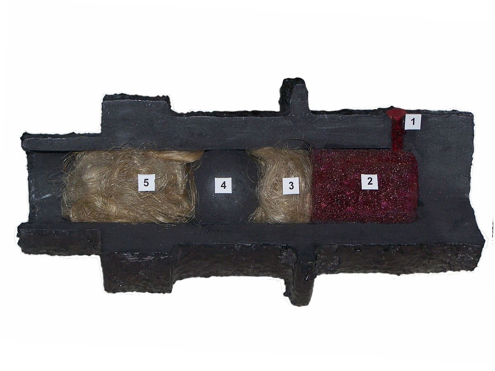

Muzzleloading(Ağızdan Yükleme) , muzzleloading silahlarını ateşlemenin atış sporudur . Hem antika hem de röprodüksiyon olan namludan doldurmalı silahlar, hedef vurma, avlanma, tarihi canlandırma ve tarihi araştırma için kullanılır. Spor , 1930'larda Amerika Birleşik Devletleri'nde ortaya çıktı , tam da son orijinal kullanıcılar ve ağızdan doldurmalı silah üreticileri ölürken. Spor, 1960'larda ve 1970'lerde muazzam bir destek aldı. Ağızdan Doldurucular Dernekleri Uluslararası Komitesi (www.MLAIC.org) 1970 yılında kuruldu ve ilk Dünya Şampiyonasını 1971'de gerçekleştirdi. O zamandan beri, tarihi ateşli silahların çalışan reprodüksiyonlarını üreten gelişen bir endüstri artık Amerika Birleşik Devletleri'nde ve Avrupa'da , özellikle kuzeyde var.İtalya , örneğin Brescia Eyaletindeki Gardone Val Trompia'da . Amerika Birleşik Devletleri'nde, ağızdan doldurmalı silahlar, bir takım niteliklere tabidir ve genellikle ateşli silahlar olarak kabul edilmez. Eyalet yasalarına tabi olarak, başka türlü yasal olarak ateşli silah sahibi olmalarına izin verilmeyen kişiler tarafından ele geçirilebilirler.
Amerikan Ulusal Ağızdan Doldurma Tüfeği Derneği , Friendship, Indiana'da yılda iki ulusal turnuva ve Phoenix, Arizona'da düzenlenen Western National Shoot Etkinliği düzenler.
Ağızdan Doldurucular Dernekleri Uluslararası Komitesi (MLAIC), namludan doldurmalı silahlarla uluslararası rekabeti yönetir. MLAIC çift sayılı yıllarda bir Kısa Mesafe Dünya Şampiyonasına ve tek sayılı yıllarda bir Uzun Mesafe Dünya Şampiyonasına (300 ila 1000 yarda) sahiptir (Güney Afrika son 5 Uzun Menzilli Dünya Şampiyonasını kazanmıştır).
Bir muzzleloader , merminin ve itici yükün tabancanın ağzından (yani , tabanca namlusunun ileri, açık ucundan) yüklendiği herhangi bir ateşli silahtır . Bu, kama doldurmalı ateşli silahların modern (daha yüksek teknolojili ve yapımı daha zor) tasarımlarından farklıdır . "Muzzleloader" terimi, hem yivli hem de yivsiz tip muzzleloader'lar için geçerlidir ve bu tür ateşli silahların atışında uzmanlaşmış nişancıya da atıfta bulunabilir. Ateşleme yöntemleri, gereçler ve mekanizma, her iki kategoriyi de kalibre olarak ayırır ( toplardan küçük kalibreli avuç içi tüfeklere kadar ).
Modern ağızdan doldurmalı ateşli silahlar, yan kilitli, çakmaklı ve vurmalı uzun silahların reprodüksiyonlarından, uzun mesafelerde önemli ölçüde isabet sağlamak için kapalı bir kama, mühürlü fünye ve hızlı tüfek gibi modern icatları kullanan sıralı tüfeklere kadar uzanır.
Modern havan topları , sevk yükü ve tabana eklenmiş astar ile bir kabuk kullanır. Ağızdan doldurmalı topla aynı şekilde yüklenen eski namludan doldurmalı havanların aksine, modern havan mermisi, bir pimin kapsülü ateşleyerek ana sevk yükünü ateşlediği namludan aşağıya mermi düşürülerek ateşlenir. Hem modern havan hem de eski havan, yüksek açılı ateş için kullanıldı. Ancak harcın ayrı aşamalarda doldurulmaması, ağızdan dolma tanımını tartışma konusu yapabilir.
Ağızdan doldurma, toplardan tabancalara kadar her şey için geçerli olabilir, ancak modern tabirle terim en çok kara barutlu küçük silahlar için geçerlidir . Her zaman olmamakla birlikte genellikle, gevşek bir itici gaz (yani barut ) ve merminin yanı sıra ayrı bir ateşleme veya ateşleme yönteminin kullanılmasını içerir.
Genel olarak, yükleme sırası, tarihsel olarak çoğunlukla bir toz şişesi (veya toz boynuzu) kullanılarak ölçülü miktarda gevşek tozun içine dökülerek veya önceden ölçülmüş bir torba veya kağıt barut paketi sokarak ilk barutu koymaktır. ( kartuş olarak adlandırılır ) veya katı yakıt peletleri ekleyerek. Kullanılan barut tipik olarak kara barut veya Pyrodex gibi kara barut muadilleridir.. Bazen flaş tavası için daha ince astar tozu ve topun arkasındaki ana şarj için daha kaba tozdan oluşan iki tür barut (ve iki şişe) kullanıldı. Bu, özellikle çifteliler gibi daha önceki ağızdan doldurucularda durumdu, ancak çakmaklı kilitlerde daha az yaygın görünüyor ve doldurma tozu yerine vurmalı kapaklar kullandıkları için vurmalı kilitlerle alakasız görünüyor.
Vatka , keçe, kağıt, kumaş veya karttan yapılır ve birkaç farklı kullanıma sahiptir. Av tüfeğinde , saçmaların barut şarjına düşmesini önlemek için barut ile atış şarjı arasında ve namluda yerinde tutmak için atış şarjının üstünde bir kart tamponu veya başka bir güvenli dolgu kullanılır. On dokuzuncu yüzyılın ortalarından sonlarına kadar kartuşların piyasaya sürülmesinden önce kullanılan düz delikli tüfeklerde ve çoğu tüfekte, dolgu, esas olarak tozu yerinde tutmak için kullanıldı.
Çoğu donanma topunda, barutu yerinde tutmak için tek parça dolgu kullanıldı ve atış çevresinde daha iyi bir mühür oluşturma amacına hizmet etti. Bir diğeri, geminin sallanması nedeniyle atışın yuvarlanmasını durdurmak için tıkaç görevi görmek için kullanıldı.
Atıcı veya bir hizmetkar tarafından partiler halinde yapılan hem barut hem de top içeren fişeklerin kullanımı çok erken dönemlerden beri biliniyordu, ancak kabaca 1800'lere kadar bir barut şişesi ve bir torba top kullanılarak yükleme, dışında daha yaygındı. askeri. Barutun namlu yükünün ölçüm aşamasından, genellikle bir palaska üzerinde taşınan küçük ahşap, metal veya kumaş kaplarda önceden ölçülmüş bir dizi şarj taşınarak kaçınılabilir.. Bunlar, genellikle 12 taşındığı için "şarj cihazları" veya "havariler" dahil olmak üzere çeşitli isimlerle biliniyordu. Çoğu zaman ağızdan doldurucular kullanımdaydı, yuvarlak bir top ve önceden ölçülmüş toz yükü bir kağıt veya kumaş ambalaj içinde taşınabilirdi. Atıcı, kağıt kartuşun ucunu dişleriyle ısırır ve tozu namluya, ardından kağıt ambalajın içine yerleştirilmiş topun içine dökerdi.
Mermiler ve tıkaçlar daha sonra itici gaz yüküne sıkıca oturana kadar bir ramrod ile kama içine doğru itildi . Hazırlama tozu, ayrı bir doldurma şişesinde taşınabilir ve doldurma tepsisine dökülebilir veya kartuştan biraz toz kullanılabilir ve doldurma tozunu yerinde tutmak için kıvrım aşağı doğru itilir. Barut ve mermi veya atış yükü namluya yerleştirildikten sonra, her şeyi namlunun dibine sıkıca sıkıştırmak için bir ramrod kullanıldı. Daha sonra ya bir doldurma şarjı doldurma tepsisine yerleştirildi ya da nipele bir vurmalı kapak yerleştirildi, ateşleme mekanizması başlatıldı; ateşli silahı ateşe hazır hale getirmek için horoz veya çekiç daha sonra kaldırıldı.
1. Hazırlama şarjı; 2. Ana itici güç; 3. Vatka; 4. Mermi; 5. Vatka.
Ağızdan doldurmalı ateşli silahlar genellikle yuvarlak toplar, silindirik konik mermiler ve atış yükleri kullanır.
Yuvarlak top ateşleyen bazı tüfek türlerinde , namlu çapından biraz daha küçük olan bir topun etrafına yağlanmış bir kumaş parçası (bkz. Kentucky tüfeği ) sarılır. Diğer yuvarlak top ateşlemeli tüfek türlerinde, yuvarlak topu tüfeğin içinden aşağı doğru zorlamak için bir ramrod ve çekiç kullanılır. Ateşlendiğinde, ya kurşun top ya da sargı, yivi kavrar ve topa dönüş verir, bu da genellikle daha iyi doğruluk sağlar. Minié toplarını ateşleyen tüfeklerde , genellikle kartuştan çıkan kağıt sargı olan yama, bir ilk mühür olarak ve yükleme sırasında tozu yerinde tutmak için kullanılır.
Minié topu , 1840'larda ve 1850'lerde çoğu ateşli silahta, özellikle askeri silahlarda yuvarlak topun yerini aldı. Tüfeği kavramak için genişleyen içi boş bir tabana sahiptir. Dönen Minié top ve iyileştirilmiş contanın sağladığı tutarlı hız kombinasyonu, yerini aldığı yivsiz ağızdan dolduruculardan çok daha iyi doğruluk sağladı.